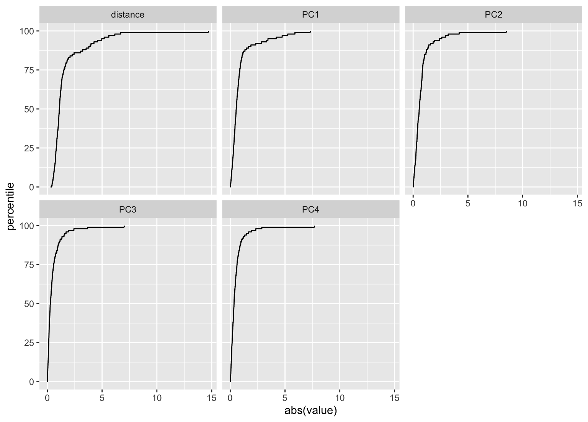
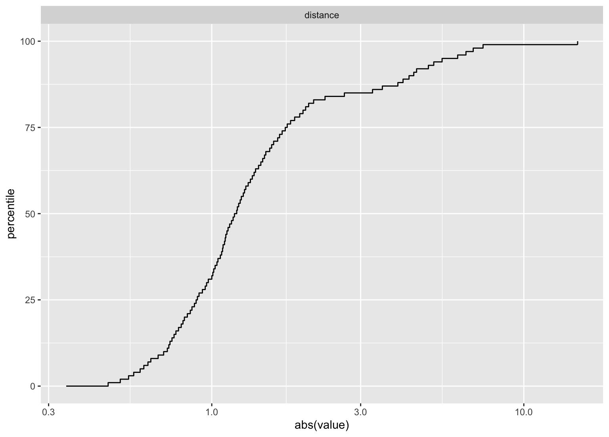
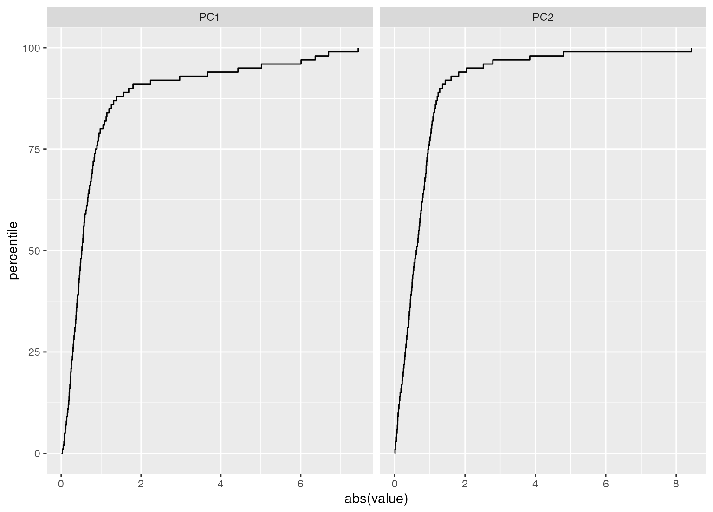

autoplot.apd_pca.RdPlot the distribution function for pcas
# S3 method for apd_pca autoplot(object, ...)
| object | An object produced by |
|---|---|
| ... | An optional set of |
A ggplot object that shows the distribution function for each
principal component.
library(ggplot2) library(dplyr) data(biomass, package = "recipes") biomass_ad <- apd_pca(biomass[, 3:7]) autoplot(biomass_ad)